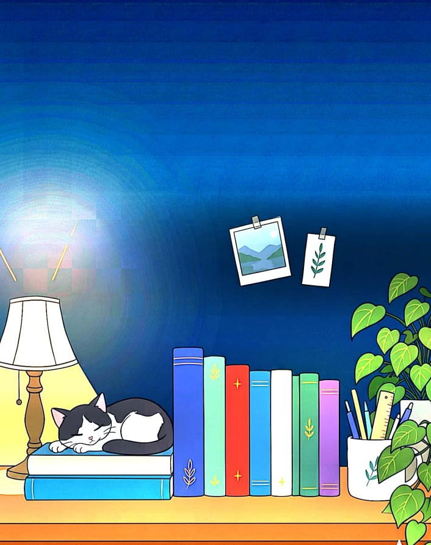
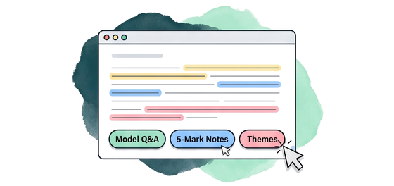
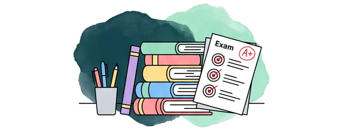

Everything you need for
everything you study.
Explore semester-wise study guides, unit notes, question banks, and MCQs.

Browse Our Guides
College Studies,
Explained Better

A more helpful approach
Our guides use color-coded themes, syllabus breakdowns, and web interactivity to make university courses simple to master.
Every semester & paper mapped
From Semester 1 foundation courses to Semester 6 major papers, every unit is mapped directly to university curriculum and paper codes.

For every college student
Includes 2-mark short answers, 5-mark conceptual notes, 10-mark essays, and instant-scoring MCQ tests for quick self-study.